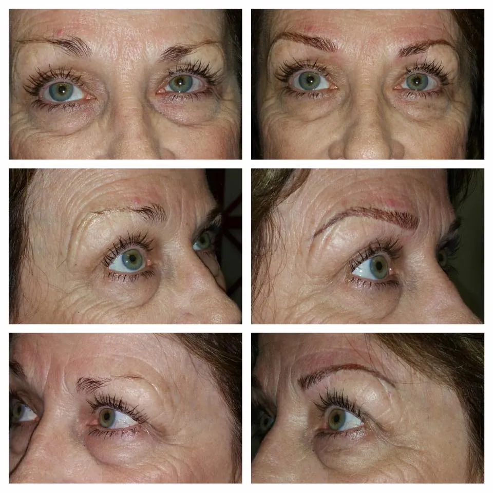

What is Microblading? The Art of Natural Hair Strokes
Microblading is a meticulous technique performed using a specialized handheld tool. Tiny needles create fine, crisp lines that mimic the look of natural eyebrow hairs. It's a form of cosmetic tattooing designed to look incredibly realistic, offering a very natural looking microblading Austin effect.

Who is Microblading Ideal For?
- Skin Type: Best suited for individuals with normal to dry skin. The hair strokes tend to heal crisper and retain their definition better on these skin types.
- Desired Look: Perfect for those wanting a subtle enhancement, filling in sparse areas, or creating a very natural, 'I woke up like this' feathered brow look. If you prefer brows that don't look heavily made up, microblading is often the preferred choice.
- Goals: Addressing sparse eyebrows, adding definition without density, achieving hyperrealistic hair simulation.
The Microblading Result & Longevity
The outcome is soft, natural-looking brows defined by individual hair strokes. Microblading typically requires touch-ups every 12-18 months to maintain the crispness of the strokes. Learn more in our Ultimate Guide to Microblading and about PMU longevity.
What are Powder Brows? The Soft Makeup Effect
Powder Brows (sometimes called Ombre Brows) use a digital machine to deposit pigment into the skin, creating a soft, pixelated effect similar to using eyebrow powder or a pencil. The result is a fuller, more defined brow with a gradient effect – typically softer at the front and gradually darkening towards the tail.
Who are Powder Brows Ideal For?
- Skin Type: An excellent option for all skin types, including oily, combination, and mature skin, where microblading strokes might blur or fade faster. This makes it a great choice for many Austin clients dealing with oily skin microblading concerns.
- Desired Look: Ideal if you prefer a more filled-in, 'makeup' look, enjoy the appearance of powdered brows, or want more density and definition than microblading alone provides.
- Goals: Achieving a polished makeup look, adding significant density, covering previous permanent makeup, suitable for those with oilier complexions.
The Powder Brow Result & Longevity
Powder Brows deliver a beautifully shaded, soft yet defined look. They often tend to last slightly longer than microblading, especially on oilier skin types, though individual factors always play a role. Touch-ups are needed to maintain color vibrancy over time (generally every 1-3 years).
Microblading vs. Powder Brows: Austin's Key Differences Summarized
Choosing between these two popular eyebrow tattoo Austin techniques can feel overwhelming. Here’s a quick comparison to help you decide:
- Technique:
- Microblading: Manual handheld tool creating hair-like strokes.
- Powder Brows: Digital machine creating a shaded, pixelated effect.
- Best For Skin Type:
- Microblading: Normal to Dry Skin.
- Powder Brows: All Skin Types (especially Oily, Combination, Mature).
- Final Look:
- Microblading: Natural, individual hair strokes, feathered appearance.
- Powder Brows: Soft, filled-in makeup look, defined shape, gradient effect.
- Longevity:
- Microblading: Typically 12-18 months between touch-ups.
- Powder Brows: Often 1-3 years between touch-ups (skin type dependent).
- Pain & Comfort: Both procedures are generally well-tolerated. At Studio Bella, we prioritize your comfort and use effective topical anesthetics to minimize sensation. Learn more about comfort during PMU procedures.
- Healing: Both techniques involve a healing process (around 4-6 weeks total, with main visible healing in 10-14 days). Following detailed aftercare instructions is crucial for optimal results. Check our FAQ for more details.
What About Combination Brows? The Best of Both Worlds
Can't decide? You might not have to! Combination Brows strategically combine microbladed hair strokes (often at the front of the brow for a natural start) with machine shading (through the body and tail for density). This offers both the natural texture of hair strokes and the definition of powder brows, creating a beautifully balanced look suitable for many clients and skin types. It's a very popular choice for achieving a defined yet fluffy brow.
Choosing What’s Right for Your Austin Lifestyle
Ultimately, the best brow style for you depends on:
- Your Skin Type: This is often the most significant factor. Oily skin typically holds the soft shading of Powder Brows better than crisp microblading strokes.
- Your Desired Look: Do you want hyper-natural or a soft makeup effect? Be honest about your aesthetic goals.
- Your Lifestyle: Both options offer the incredible benefit of smudge-proof, waterproof brows perfect for Austin's active lifestyle – from hiking the Greenbelt to swimming at Barton Springs without a worry! Saving time is a key benefit highlighted by Studio Bella clients.
Addressing Common Concerns: Many potential clients worry about unnatural results ("Sharpie brows") or safety. Choosing an experienced, certified artist like Cookie Bandel at Studio Bella is paramount. With over 15 years of experience (since 2008), extensive training, and a focus on customization, Cookie ensures your look is tailored to your features and desires, prioritizing natural-looking results and adhering to the strictest safety and hygiene protocols. This expertise is why clients travel from other cities and states and trust Studio Bella for corrections.
The best way to determine your ideal brow style is through a personalized consultation. Read our guide on choosing the right PMU artist here.
Conclusion: Microblading or Powder Brows? Your Austin Choice
Both Microblading and Powder Brows offer transformative results, giving you the gift of beautiful, symmetrical, and effortless eyebrows. Microblading excels at creating incredibly natural hair strokes, best suited for normal to dry skin. Powder Brows provide a durable, soft makeup look perfect for all skin types, especially oily or mature skin. Combination brows offer a versatile blend of both.
Understanding these differences empowers you to choose the technique that aligns best with your skin, goals, and aesthetic preferences. Remember, the most crucial step is consulting with a skilled and experienced permanent makeup artist who can assess your individual needs and guide you towards the perfect brow transformation right here in Austin.
Ready to Find Your Perfect Brow Style?
Discover whether Microblading, Powder Brows, or Combination Brows are right for you with Austin's trusted expert.
Book Your Free Consultation